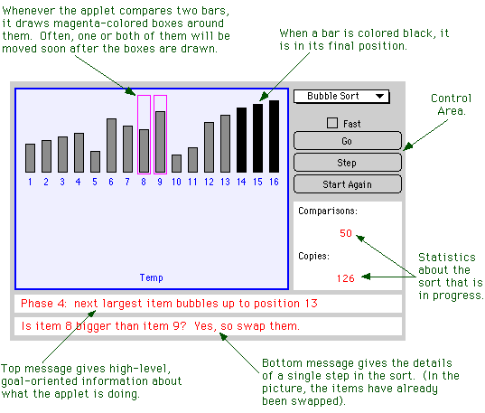
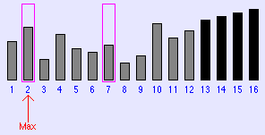
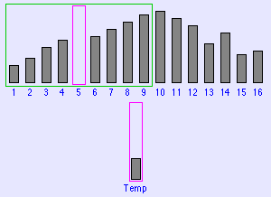
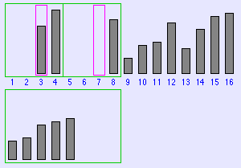
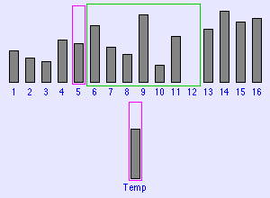

Labs for The Most Complex Machine
xSortLab Lab: Sorting and the Analysis of Algorithms
ONE OF THE MOST COMMON OPERATIONS performed by computers is that of sorting a list of items. An example of this would be sorting a list of names into alphabetical order. This lab deals with two natural questions: How can sorting be done? And how can it be done efficiently?
The second question is one that would be asked in a field of study called the analysis of algorithms. Recall that an algorithm is an unambiguous, step-by-step procedure for solving a problem, which is guaranteed to terminate after a finite number of steps. For a given problem, there are generally many different algorithms for solving it. Some algorithms are more efficient than others, in that less time or memory is required to execute them. The analysis of algorithms studies time and memory requirements of algorithms and the way those requirements depend on the number of items being processed. In this lab, you'll look at the time requirements of various sorting algorithms.
In the lab, you will see five remarkably different algorithms for sorting a list. Each algorithm solves the sorting problem in a different way. You will see how each algorithm works, and you will also see that some sorting algorithms are much more efficient than others.
Sorting and the analysis of algorithms are discussed as one example in Section 9.3 of The Most Complex Machine. Some of the material from that section is repeated in this lab. However, some background material and motivation is not repeated here, and it would be worthwhile for you to read Section 9.3 before doing the lab.
This lab includes the following sections:
You'll be using an applet called xSortLab. Start by clicking this button to launch the applet in its own window:
(For a full list of labs and applets, see the index page.)
Watching Bubble Sort
The xSortLab applet has two operating modes: "Visual Sort" and "Timed Sort." There is a pop-up menu at the very top of the applet that can be used to select one of these modes. The pop-up menu also contains an entry for a "Log" which records statistics about sorts that have been performed by the applet. When the applet first starts up, it is in Visual Sort mode, and you will use this mode for the first part of the lab. In this mode, you can watch as the applet sorts sixteen bars into order of increasing height. Later in the lab, you'll be using the Timed Sort mode.
The applet can perform five different sorting algorithms: Bubble Sort, Selection Sort, Insertion Sort, Merge Sort, and QuickSort. When it fist starts up, it is set to use Bubble Sort. There is a pop-up menu near the upper right corner of the applet that you can use to select the sorting method that you want to work with. Below the pop-up menu are three buttons and a checkbox that can be used to control the applet. Click on the "Go" button to let the applet perform the sort automatically, without further intervention from you. Click on the "Step" button to perform just one step in the sort. The "Start Again" button lets you start a new sort, with a randomly arranged set of bars. (The applet will also start a new sort if you select a new sorting method from the pop-up menu.)
All the sorting algorithms that you will look at use two basic operations: compare two items to see which is largest, and copy an item from one place to another. Sorting consists of these two operations performed over and over (plus some "bookkeeping," such as keeping track of which step in the sort the computer is currently performing). Sometimes, the program has to exchange, or swap, two items. It takes three copy operations to perform a swap: First, copy the first item to a special location called "Temp." Second, copy the second item into the first location. And third, copy the item from "Temp" into the first location. As the xSortLab applet performs a sort, it will tell you how may comparison and copy operations it has done so far. This information is displayed in the lower right section of the applet.
Your first task in the lab is to understand Bubble Sort, using the xSortLab applet that you launched above. The basic idea of Bubble Sort is to compare two neighboring items and, if they are in the wrong order, swap them. The computer moves through the list comparing and swapping. At the end of one pass, the largest item will have "bubbled up" to the last position in the list. On the second pass, the next-to-largest item moves into next-to-last position, and so forth. Here is a picture of what the applet will look like when it is partway through the sort. I've added some comments to help you understand what you see:

Use the "Step" and "Go" buttons in the xSortLab Applet to execute Bubble Sort. Check the "Fast" checkbox when you want to speed things up. (This option might also help you to get the broader picture of how the algorithm operates.) You should try stepping slowly through the algorithm with the "Step" button, reading each message in detail. It will also be useful for you to watch the algorithm run itself at "Fast" speed. At this speed, the applet only displays the upper message, which tells you what it is trying to accomplish in each major phase of the algorithm. In Bubble Sort, each major phase moves one item into its final position at the end of the list.
The learn how the Bubble Sort algorithm works, you will have to pay attention to what you see and think about it. You have control over the applet. Use your best judgement about how to proceed. In the exercises at the end of the lab, you will be asked to apply Bubble Sort by hand. You should make sure you understand it well enough to do this.
Other Sorting Algorithms
You can go on to learn about the four other sorting algorithms (or as many of them as you care to look at). The five sorting algorithms can be divided into two groups. Bubble Sort, Selection Sort and Insertion Sort are fairly straightforward, but they are relatively inefficient except for small lists. Merge Sort and QuickSort are more complicated, but also much faster for large lists. QuickSort is, on average, the fastest. Bubble Sort is the slowest. Bubble Sort is often the first -- and sometimes the only -- sorting method that students learn. Here are brief descriptions of the four remaining algorithms, with some information about what you see when xSortLab executes them:
Selection Sort is probably the easiest sorting method to understand. In each major phase of the algorithm, the next largest item is found and moved into position at the end of the list. In the picture below, the four black bars have already been moved into position, and the algorithm is in the middle of the next phase. It is important to remember that the program can't just "look at all the bars and pick the biggest one" in one step, as you can. It is restricted to comparing two items at a time. To find the largest item in a list, the computer moves through the list one item at a time, keeping track of the largest item it has seen so far. After looking at all the available items, it knows which is the largest item overall. It moves the largest item into the next available spot at the end of the list by swapping it with the item that is currently occupying that spot. In the picture, during the current phase of the sort, the computer has looked at items number 1 through 7. An arrow labeled "Max" is pointing to item number 2, since that is the largest item that the computer has seen so far during this phase of the sort. The magenta-colored boxes indicate that the computer has just compared items 2 and 7. The next step will be for it to compare items 2 and 8.

In Insertion Sort, the basic idea is to take a sorted list and to insert a new item into its proper position in the list. The length of the sorted list grows by one every time a new item is inserted. You can start with a list containing just one item. Then you can insert the remaining items, one at a time, into the list. At the end of this process, all the items have been sorted. In the picture below, the items that are enclosed in a green box have been sorted into increasing size. Each major phase of the sort inserts one new item into this list and increases the size of the box by one. The problem is to determine where in the list the new item should be inserted. You can use the applet to see how it all works.

Merge Sort uses the idea of "merging" two sorted lists into one longer sorted list. To start, think of single items as being sorted lists of length one. In the first phase of the sort, these lists of length one are paired off and are merged to form sorted lists of length two. In the next phase of the sort, the lists of length two are merged to form lists of length four. Then lists of length four are merged into lists of length eight. This continues until all the items have been merged into one long sorted list. In the picture below, lists of length four are being merged into lists of length eight. The two lists that are being merged are in the top row, enclosed inside a pair of green boxes. The merged list that is being formed is in the bottom row, surrounded by a bigger green box. In the picture, items 3 and 7 have just been compared. Since item 7 was smaller, it has been moved to the bottom list.

QuickSort is the most complicated of the available sorting methods. The main idea in QuickSort is an operation called "QuickSortStep," which works like this: Remove one item from the list. Then divide the remaining items into two parts: items bigger than the removed item and items smaller than the removed items. Move all the smaller items to the beginning of the list and all the bigger items to the end, leaving a gap in the middle. The item that was removed at the beginning is placed in the gap. Since all the items to the left are smaller and all the items to the right are bigger, the item that was placed into the gap is in its correct, final position. In the xSortLab applet, the item is colored black to indicate that it will not move again during the rest of the algorithm. The black item divides the list into two parts; each of these parts still has to be sorted. This is done by applying QuickSortStep recursively to each part. The great cleverness of QuickSortStep is in the efficient way in which it divides the list into smaller items and bigger items -- but that is easier seen than described.
The picture below shows QuickSortStep being applied to the original list of sixteen items. An item has been removed from the list and placed in "Temp." A box encloses items that have not yet been compared to Temp; as far as the program knows, Temp could end up in any of the locations enclosed by the box. Items to the left of the box are known to be smaller than Temp. Items to the right are known to be larger. Each step shrinks the box by one location, moving an item from that location to the other side of the box if necessary. In the end, there is only one location left in the box, and that is where Temp belongs.

Using the Timed Sort Mode
Now that you understand how some sorting algorithms work, the next step is to investigate how efficiently lists of items can be sorted. In this part of the lab, you will use the "Timed Sort" mode of the xSortLab applet. Select this mode from the pop-up menu at the very top of the applet (which you launched above). In the Timed Sort mode, the computer works behind the scene to sort arrays of randomly generated numbers. An array is just a numbered list of items; the size of the array refers to the number of items in the list. As the computer sorts the arrays, it displays various statistics in the large green area in the center of the applet. The statistics are updated about twice every second.
At the top of the applet, there is a text-input box where you can type the size of the arrays to be sorted. There is also a box where you can type the number of arrays to sort. The computer will create the number of arrays that you specify. Each array will have the size that you specify. The computer fills all the arrays with random numbers. Then it sorts each array, one after the other. The reason for using more than one array is that for small arrays, the time it takes to sort a single array is a tiny fraction of a second. Since xSortLab can't measure very small time intervals accurately, the only way to get an accurate idea of the sorting time for small arrays is to sort a lot of arrays, measure the time it takes to sort them all, and divide the total time by the number of arrays. For larger array sizes, using more than one array is not so important (but it might still give you a more accurate measurement).
At the bottom of the applet, you will see a pop-up menu that can be used to select the sorting algorithm that is to be applied to the arrays. There is a also a "Start Sorting" button. Once you have selected the sorting method and set up the size of the arrays and the number of arrays, click on the "Start Sorting" button to begin. (If you are dealing with a large number of items, there will be a noticeable time interval before the computer starts sorting. The pause occurs while the computer is filling the arrays with random numbers.) When you click the "Start Sorting" button, the name of the button will change to "Abort." Use the "Abort" button if you want to terminate the sorting operation before the computer finishes.
The xSortLab applet displays several different statistics about the sorts its does. For this lab, you will only need the "Approximate Compute Time." This is different from the "Elapsed Time" because as it is computing the applet allows some time -- about 20% of the time available -- for other activities, such as redrawing the screen. It is only the time actually devoted to sorting that you are interested in. The compute time is approximate because it is possible for your browser or other programs on your computer to steal time from the applet. The applet might incorrectly include this time in the compute time it reports. However, if you are not doing anything else with your computer at the same time that the applet is sorting, then the reported time should be reasonably accurate. The computer measures time in units of 1/1000 of a second, and this also limits the accuracy of measurements. In particular, you should not try to use measurements that are less than, say, 0.1 seconds. Ideally, you should adjust the number of arrays so that the compute time is at least a couple of seconds.
Your task in this part of the lab is to gather timing statistics about each of the five available sorting methods. You want to measure how long it takes each method to sort arrays of various sizes. You will need this data for the exercises at the end of the lab, so you should record the data as you work. For each experiment that you do, record the array size, the number of arrays, and the compute time that is reported by the applet.
You should apply each method to arrays of at least the following sizes: 5, 10, 100, and 1000. In addition, you should apply Merge Sort and QuickSort to arrays of size 10000. You might also want to try Merge Sort and QuickSort on arrays with 100000 items. And you might try Bubble Sort, Selection Sort, and Insertion Sort with 10000 items. For the largest array sizes, it will be good enough to sort a single array. For the smaller array sizes, you will have to set the number of arrays to be rather large to get a decent measurement. Don't be afraid to sort 10000, or even 100000, arrays of size 5. Use your judgement. (If the arrays require more memory than your computer has available, you should just get an error message. However, this has crashed many systems that I tried it on.)
N2 and N*log(N)
In the previous section of the lab, you measured the computation times for the five sorting algorithms on arrays of different sizes. You probably noticed that QuickSort and Merge Sort are much faster than the other three algorithms, except for very small arrays. This final section of the lab gives a more rigorous mathematical form to this observation.
Some sorting algorithms exhibit what is called running time on the order of N squared. They are also called, more briefly, N2 algorithms. The N here is the number of items being sorted. To say that an algorithm is of the order of N2 means that the running time of the algorithm for an array of N items is given approximately by K*N2, where K is some constant number. (The approximation tends to become more exact as N gets bigger.) Different algorithms have different values for K. Furthermore, if the same algorithm is run on different computers, each computer will give a different value of K. (Saying that K is a "constant" means that for a given algorithm running on a given computer, there is one value of K that will work for any array size N.)
Bubble Sort is an example of an N2 algorithm. You should be able to use the data you collected in the previous section of the lab to calculate a K-value for Bubble Sort running on your computer. For example, suppose that it took 8.205 seconds to sort 5 arrays of size 1000. Here N, the array size, is 1000. Let T be the time it took to sort one array of size 1000. T can be computed by dividing the total time, 8.205, by the number of arrays, 5. This gives T = 1.641 seconds. Now, T is supposed to be given approximately by the formula
T = K * N2
We know that N is 1000 and T is 1.641, so the equation becomes
1.641 = K * 10002
You can solve this for K to get
K = 1.641/(10002) = 0.000001641
More generally, a value for K can be calculated from the formula K = T/(N*N). Of course, this is only supposed to be an approximation. But if you repeat the experiment several times with different array sizes, and calculate a value for K from each experiment, you should get values of K that are fairly close to one another. If this does not happen, then the algorithm you are looking at is probably not an N2 algorithm. (Remember, though, that there is room for some "experimental error" because of the difficulty of measuring compute time. Also, keep in mind that the values calculated for K tend to get more accurate as N increases. A very small value of N might give a poor approximation for K.)
Not every sorting algorithm is an N2 algorithm. Some of them are N*log(N) algorithms. This means that the running time of the algorithm is given approximately by K*N*log(N), where N is the size of the array and K is a constant. The function log(N) is the logarithm of N. You can compute this function using the "log" button on your calculator. (There are actually many different logarithm functions, and you can use any of them as long as you are consistent. If you use a differernt logarithm function, you'll just get a different value for K. The log function on your calculator is almost surely the "common" or "base-10" logarithm, and that's the one that I will use in this lab.) You don't need to know anything about logarithms, except that when N is large, N*log(N) is much smaller than N2. This means that for large values of N, an N*log(N) algorithm will run much faster than an N2 algorithm. Based on this, you can probably guess which of the five algorithms are N2 algorithms and which are N*log(N) algorithms.
Of course, you can use the measurements you made in the previous section of the lab to compute an approximate value for K. If T is the time it takes to sort an array of size N, then an approximate value for K is given by the formula:
K = T / (N*log(N))
You will do some calculations of this kind in the exercises below.
Exercises
Exercise 1: Each phase of Insertion Sort inserts an item into its correct location in a sorted list. Describe in detail how this insertion is accomplished. Try to give an algorithm -- an unambiguous, step-by-step procedure -- for inserting a new item into a sorted list. You can get the information you need by running the xSortLab applet and seeing how it performs this task.
Exercise 2: Suppose that Bubble Sort is applied to the following list of numbers. Show what the list will look like after each phase in the sort:
73 21 15 83 66 7 19 18
Exercise 3: Suppose that Selection Sort is applied to the list of numbers given in Exercise 2. Show what the list will look like after each phase in the sort:
Exercise 4: Suppose that Merge Sort is applied to the following list of numbers. Show what the list will look like after each phase in the sort:
73 21 15 83 66 7 19 18 21 44 58 11 91 82 44 39
Exercise 5: Suppose you have a list of names. You could sort the list into alphabetical order either by first name or by last name. Suppose that the list is already sorted by last name. For example:
Phil Doe Jane Doe Fred Doe Bill Jones Jane Jones Mary Smith Fred Smith Jane SmithNow, suppose that you take this list and sort it into alphabetical order by first name. In the new list, Jane Doe, Jane Jones, and Jane Smith will be grouped together. The question is, will they be in that order. That is, will people with the same first name still be in alphabetical order by last name? For some algorithms, the answer is yes. Other algorithms, however, can mess up the relative order of a group of people with the same first name. A sorting algorithm that will always preserve the order of people with the same first name is said to be stable. Is Selection Sort a stable algorithm? Why or why not? How about Bubble Sort? Why or why not? (You might want to apple Bubble Sort and Selection Sort to the above list to see what happens.)
Exercise 6: Consider the data that you collected on the compute time of the five sorting algorithms. For arrays of size 100, how do the algorithms rank according to speed? How about for arrays of size 5? The two orderings should be very different. How can this be? If one algorithm is faster than another for arrays of size 5, why shouldn't it be faster for arrays of size 100?
Exercise 7: Selection Sort is an N2 algorithm. You should be able to use data you collected in this lab to compute the value of K in the equation T = K*N2 for Selection Sort running on your computer. (Recall that N here is the array size and that T is the time it takes to sort one array of size N. Also remember that the equation is only approximately true.) Make a table showing the following information for each array size, N, for which you collected data: The array size (N); the number of arrays you sorted; the total computation time to sort the arrays; the computation time for one array (T); and the computed value T/(N*N) which is an approximation for K.
Based on the data in your table, what is your best guess for the actual value of K? Explain your reasoning.
For your convenience, here is an applet that you can use to do the computation. Enter the array size, the number of arrays, and the total computation time in the three boxes at the top. The applet will calculate the computation time per array and the value of T/(N*N). It will do the calculation when you click the "Compute" button and whenever you press return while typing in one of the boxes.
Exercise 8: QuickSort is an N*log(N) sorting algorithm. You should be able to use data you collected in this lab to compute the value of K in the equation T = K*N*log(N) for QuickSort running on your computer. Make a table just like you did for Exercise 7, but use the value of T/(N*log(N)) instead of T/(N*N). You can use the above applet to do the calculation. Based on the data in your table, what is your best guess for the actual value of K? Explain your reasoning.
Exercise 9: Is Insertion Sort an N2 or an N*log(N) algorithm. You can probably guess, but how can you be sure? From the data you collected in the lab, compute both T/(N*N) and T/(N*log(N)) for various values of the array size N. Based on the answers, you should be able to tell whether Insertion Sort is an N2 or an N*log(N) algorithm. Which is it? Explain your reasoning. Do the same thing for Merge Sort.
Exercise 10: In Exercise 7, you determined the value of K for selection sort in the equation T = K*N2. Now that you know the value of K, you can use the equation to predict the running time T for any array size N -- even for arrays that are two big for you to experiment with. Use the equation to predict the value of T when N is equal to one billion. (One billion is 1000000000 or 109.) This is the amount of time that your computer would take to sort one billion items using Selection Sort. The equation gives T in terms of seconds, but you should convert your answer to years.
Similarly, you can use the equation T = K*N*log(N) and the value of K that you found in Exercise 8 to predict the running time T for QuickSort for arrays of any size N. What is the prediction for the running time of QuickSort on an array of one billion items? Give your answer in terms of hours.
Comment on the answers to the two parts of this exercise.
This is one of a series of labs written to be used with The Most Complex Machine: A Survey of Computers and Computing, an introductory computer science textbook by David Eck. For the most part, the labs are also useful on their own, and they can be freely used and distributed for private, non-commercial purposes. However, they should not be used as a formal part of a course unless The Most Complex Machine is also adopted for use in that course.--David Eck (eck@hws.edu), Summer 1997